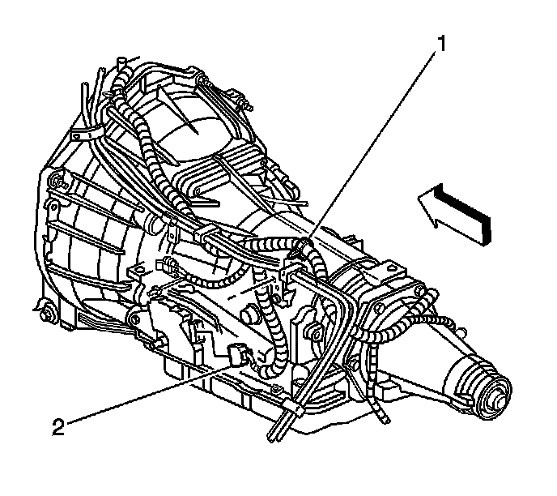

Transmission Replacement
Transmission Replacement
Tools Required
J 21366 Converter Holding Strap
Removal Procedure
1. Disconnect the negative battery cable.
2. Raise and suitably support the vehicle. Refer to Lifting and Jacking the Vehicle.
3. Remove the rear propeller shaft.
4. Support the transmission with a transmission jack.
5. Remove the transmission crossmember.
6. Remove the transmission mount.
7. Remove the catalytic converter pipe.
8. If the vehicle is equipped with a transfer case, remove the front propeller shaft. Refer to Front Propeller Shaft Replacement.
9. Remove the torque converter access plug.
10. Remove the left flywheel inspection cover.
11. Remove the starter motor.
12. Remove the right flywheel inspection cover.
13. Remove the flywheel to torque converter bolts.
14. Lower the transmission to gain access to the top and sides of the transmission.
15. Disconnect the vent tube hose and the electrical connections from the transfer case, if equipped.
16. Remove the transfer case, if equipped. Refer to the appropriate procedure:
^ Transfer Case Assembly Replacement for the BW 4485-NR3 transfer case.
^ Transfer Case Assembly Replacement for the NVG 246-NP8 transfer case.
17. Remove the 2 bolts securing the heat shield to the transmission.
18. Remove the transmission heat shield.
19. Remove the range selector cable from the transmission.
20. Disconnect the transmission vent hose.

21. Disconnect park/neutral position switch connector (2).
22. Remove the wire harness (1) from the bracket.

23. Disconnect the main electrical connector (1) and vehicle speed sensor (2) from the transmission.
24. Remove the bolt that secures the fuel line bracket to the left side of the transmission.
25. Remove the nut that secures the fuel line bracket to the transmission torque converter housing.
26. Disconnect the transmission oil cooler lines from the transmission.
27. Plug the transmission oil cooler line connectors in the transmission case.
28. Remove the stud and the bolt securing the transmission to the engine.
29. Remove the 6 studs and one bolt securing the transmission to the engine.
30. Pull the transmission straight back.
31. Install the J 21366 onto the transmission bell housing to retain the torque converter.
32. Remove the transmission from the vehicle while simultaneously removing the fluid level indicator tube.
33. Flush the transmission oil cooler and cooling lines if necessary.
Installation Procedure
1. Install the J 21366 onto the transmission bell housing to retain the torque converter.
2. Support the transmission with a transmission jack.
3. Raise the transmission into place while simultaneously installing the fluid indicator tube.
4. Remove the J 21366 from the transmission.
5. Slide the transmission straight onto the locating pins while lining up the marks on the flywheel and the torque converter.
The torque converter must rotate freely by hand.
Notice: Refer to Fastener Notice.
6. Install 6 studs and one bolt securing the transmission to the engine.
Tighten the studs and the bolt to 50 N.m (37 lb ft).
7. Install the stud and bolt securing the transmission to the engine.
Tighten the stud and the bolt to 50 N.m (37 lb ft).
8. Install the nut that secures the fuel line bracket to the transmission torque converter housing.
Tighten the nut to 25 N.m (18 lb ft).
9. Install the bolt that secures the fuel line bracket to the left side of the transmission.
Tighten the bolt to 10 N.m (89 lb in).
10. Connect the main electrical connector (1) and vehicle speed sensor (2) to the transmission.
11. Connect park/neutral position switch connector (2).
12. Attach the wire harness (1) to the bracket.
13. Connect the transmission vent hose.
14. Install the range selector cable to the transmission.
15. Install the two bolts securing the heat shield to the transmission.
Tighten the bolt to 17 N.m (13 lb ft).
16. Install the transfer case, if equipped. Refer to the appropriate procedure:
^ Transfer Case Assembly Replacement for the BW 4485-NR3 transfer case.
^ Transfer Case Assembly Replacement for the NVG 246-NP8 transfer case.
17. Connect the vent hose and electrical connectors to the transfer case, if equipped.
18. If reusing the torque converter bolts, clean the bolt threads and apply LOCTITE 242, GM P/N 12345382 (Canadian P/N 10953489), or equivalent to the threads prior to installation.
19. Install the flywheel to torque converter bolts.
Tighten the bolts to 63 N.m (46 lb ft).
20. Remove the flywheel inspection cover.
21. Install the starter motor.
22. Install the left flywheel inspection cover and bolt.
Tighten the bolt to 10 N.m (89 lb in).
23. Install the torque converter access plug.
24. If the vehicle is equipped with a transfer case, install the front propeller shaft. Refer to Front Propeller Shaft Replacement.
25. Install the catalytic converter pipe.
26. Install the transmission mount.
27. Install the transmission crossmember.
28. Remove the transmission jack.
29. Install the rear propeller shaft.
30. Connect the oil cooler lines to the transmission.
31. Lower the vehicle.
32. Connect the negative battery cable.
33. Fill the transmission to the proper level. Refer to Transmission Fluid Checking.
Important: It is recommended that transmission adaptive pressure (TAP) information be reset.
Resetting the TAP values using a scan tool will erase all learned values in all cells. As a result, the engine control module (ECM), powertrain control module (PCM), or transmission control module (TCM) will need to relearn TAP values. Transmission performance may be affected as new TAP values are learned.
34. Reset the TAP values. Refer to Transmission Adaptive Functions (TCM).